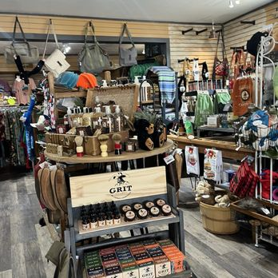
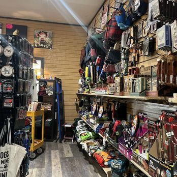

Rummage, Browse, Discover
Poke The Bear is one of the more eclectic general-interest shops on Burro Avenue. It is not a tightly curated boutique or a single-category store — it’s better understood as a rummage-and-discover shop where the point is variety and surprise.
The inventory spans used books, art, upcycled furniture, lamps, antiques, vintage items, collectibles, blankets, outdoor gear, hats, shirts, Bigfoot-themed goods, and souvenirs. That range makes it likely appealing to shoppers who enjoy browsing more than mission shopping — the kind of place where you walk in not knowing what you’ll find and leave with something unexpected.
On Cloudcroft’s main commercial block, Poke The Bear serves as one of the more freewheeling stops in the Burro Avenue shopping circuit — less polished, more packed, and built for people who like poking around.

Browse & Discover

Built for Browsing
The inventory strongly suggests a place where people linger and look around rather than grab one specific thing and leave. Shelves are packed, walls are full, and surprises are the point. If you enjoy poking through a mix of everything, this is the stop.
Burro Avenue Circuit
Poke The Bear sits on Cloudcroft’s main commercial block as part of the Burro Avenue shopping circuit. It serves as one of the more freewheeling and densely stocked stops — less polished than some neighbors, more packed with variety.
Quirky Mountain-Town Retail
From Bigfoot-themed goods to upcycled furniture to used books, Poke The Bear leans into the kind of eclectic, curiosity-driven retail that defines mountain-town shopping. It appeals to vintage pickers, gift hunters, and anyone who likes quirky finds.
Visit Poke The Bear
Everything you need to know before you go.
Location
510 Burro Ave, Cloudcroft, NM 88317. Right on the main commercial block — walkable from anywhere in the village.
Hours
Current hours are not confirmed from strong primary sources. Call 575-682-1341 or check directly before visiting, especially on weekdays or off-season.
Contact
Phone: 575-682-1341
Email: ptbear510@yahoo.com
Good to Know
This is a browse-and-discover shop, not a curated boutique. Inventory shifts regularly. Hours may be more variable than travelers expect — call ahead if making a special trip. Part of the Burro Avenue shopping circuit.
Books, Antiques, Bigfoot, and Everything In Between
Poke The Bear is where used books, vintage finds, outdoor gear, and Bigfoot-themed curiosities share shelf space on Cloudcroft’s most walkable block. A rummage-and-discover shop worth a stop.